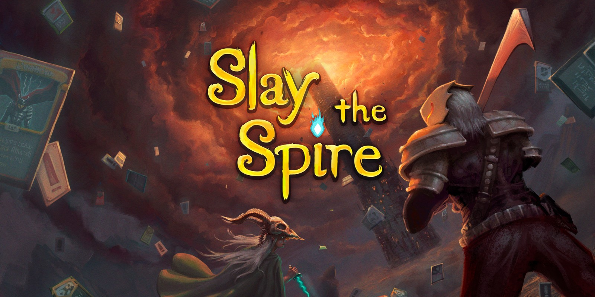

Juegos de play station plus mes de abril
Los cuatro juegos de PlayStation Plus de abril de 2022 ya están disponibles para descargar gratis
Tan solo quedan tres meses para que se active el nuevo PlayStation Plus, pero para que la espera no se haga tan larga los usuarios que ya estén apuntados al actual PlayStation Plus continuarán recibiendo juegos mensualmente para descargar gratis. De hecho, los de abril ya se encuentran disponibles para todos aquellos apuntados a este servicio.
Al igual que sucede con los de PlayStation Now, los usuarios ya pueden hacerse con ellos y así tener acceso a cuatro títulos que forman parte del catálogo de PS4, aunque uno de ellos también se ha publicado con su versión para PS5. Estos son concretamente los elegidos:
Hood: Outlaws & Legends en PS4 y PS5
Un grupo de rebeldes se adentrarán en unos castillos fuertemente custodiados por un ejército, algo que no es para menos porque en ellos se ocultan toda clase de riquezas que habrá que robar. El problema es que los soldados controlados por la inteligencia artificial no nos lo pondrán nada fácil, a lo que se suma el hecho de que al mismo tiempo tocará enfrentarse contra otro grupo de forajidos con el mismo objetivo para evitar que nos salgamos con la nuestra.
Slay the Spire en PS4
Uno roguelike formidable con mecánicas de juegos de cartas. En él deberemos superar las salas de la Aguja a medida que vamos combatiendo contra criaturas de fantasía con la ayuda de las cartas que iremos consiguiendo, de forma que, cuantas más batallas superemos, más cartas tendremos a nuestra disposición para decantarnos por unas u otras.
Spongebob Squarepants: Battle For Bikini Bottom Rehydrated en PS4
Más allá de la serie de dibujos, Bob Esponja ha protagonizado varios videojuegos y uno de ellos es esta aventura que ha regresado con unos gráficos mejorados y en la que también se han incluido nuevos contenidos que no vieron la luz en el título original. Una buena excusa para ayudar a este personaje y a sus amigos a salvar Fondo de Bikini.
Galeria de Imagenes
1. Outlaws & Legends
2. Slay the Spire
3. Spongebob Squarepants

Personajes
Outlaws & Legends
Robin Hood - El guardabosques.
Marianne - El cazador.
Tooke - El místico.
John - el peleador.Spongebob Squarepants
Bob Esponja
Patricio
Calamardo
Otras noticias
El nuevo PlayStation Plus llega en junio con más de 700 juegos y más ventajas que nunca. PS Plus y PlayStation Now se fusionan y los jugadores podrán elegir entre tres flexibles opciones. Cada modalidad tiene un precio y cada una de ellas ofrece características diferentes. Desde su lanzamiento en 2010, PlayStation Plus se ha mantenido al día de la vanguardia e innovación de videojuegos para sus consolas. Entre las novedades que ahora presenta la empresa se encuentra la fusión de PlayStation Plus y PlayStation Now en un nuevo servicio de suscripción PlayStation Plus que ofrecerá tres niveles de suscripción a los jugadores.